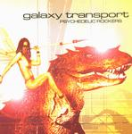

Home Artist links Label link

Galaxy Transport - Psychedelic Rockers
| Artist: | Galaxy Transport |
| Title: | Psychedelic Rockers |
| Label: | Think Progressive |
| Length(s): | 68 minutes |
| Year(s) of release: | 2001 |
| Month of review: | [07/2001] |
Line up
Julia E. T. Frost - vocals, organ
Pink Cloud - bass, keys, didgeridoo
Doc Shott - guitars, vocals
Andi Blab - guitars, effects, vocals
Tom Space - drums, percussion, programming, bass, keys, effects, vocals
Tracks
| 1) | I Don't Believe It | 3.48
|
| 2) | I'm Not Your Emotionstore | 4.41
|
| 3) | Lost | 4.16
|
| 4) | Visitors | 6.38
|
| 5) | Pearl | 4.51
|
| 6) | Medicine | 7.21
|
| 7) | Loy | 10.23
|
| 8) | Welcome To The Other Side | 5.28
|
| 9) | Interstellar Fairy Drive | 6.55
|
| 10) | Starship Pilots (on Too Strong Dope) | 3.17
|
| 11) | Psychedelic Rockers | 4.48
|
| 12) | Shivas Awakening | 6.00
|
Summary
Okay, with a title like this and titles like these, people are sure to know
what kind of music you make. Then I guess it doesn't really matter what
you put on the cover of your album. Let's blame their sense of humour.
The music
For lovers of psychedelic rock, this album has a bit of everything.
Let me explain: we open with poppy psyche and a vocalist who reminds me
of Inga Rumpf of Atlantis. The rhythms are modern though and the song
has good energy. On the lonely sounding I'm Not Your Emotionstore we hear
vocoded vocals and lots of beeps and squeaks. More Astralasia here.
After Lost we come to the krautrock of Visitors with noisy guitars.
Quite a bit of rock there. Rock becomes punk rock on Pearl with chaotic
vocals (so think Hawkwind here, but with more energy and less stomping).
Quiet and meditative we continue a la Amon Duul 2 on Medicine. A bit boring
this one. The long track Loy has modern rhythms and cosmic electronics.
This is house music, quite danceable, but not good to my ears and way too long.
Atmosphere dominates with the pop psyche of Welcome To The Other Side
I got a strong Jane feel here with accented male vocals. The melody
at times reminded me, must be accidental, of Timothy Pure's second album
(basking in the afterglow).
Folky influences on Interstellar Fairy Drive. Frolic and cosmic with a robotic
voice. Doesn't really go anywhere. Vague vocals on the British sounding
pop song, Starship Pilots. The title track gives rise to a feeling that the
band does take the "psychedelicity" or whatever quite serious. The lyrics
are rather idealistic on this somewhat inarticulately sung short track.
Shivas Awakening is dancey psyche with bleeps and pioohs. Not great.
Conclusion
Well, the rock songs certainly got my attention, but when the band slips into
Astralasia type of music, they lose me quickly. There's is not enough swing
maybe, not enough melody to go on there. As a consequence, I liked the first
part of this mixed bag better.
© Jurriaan Hage